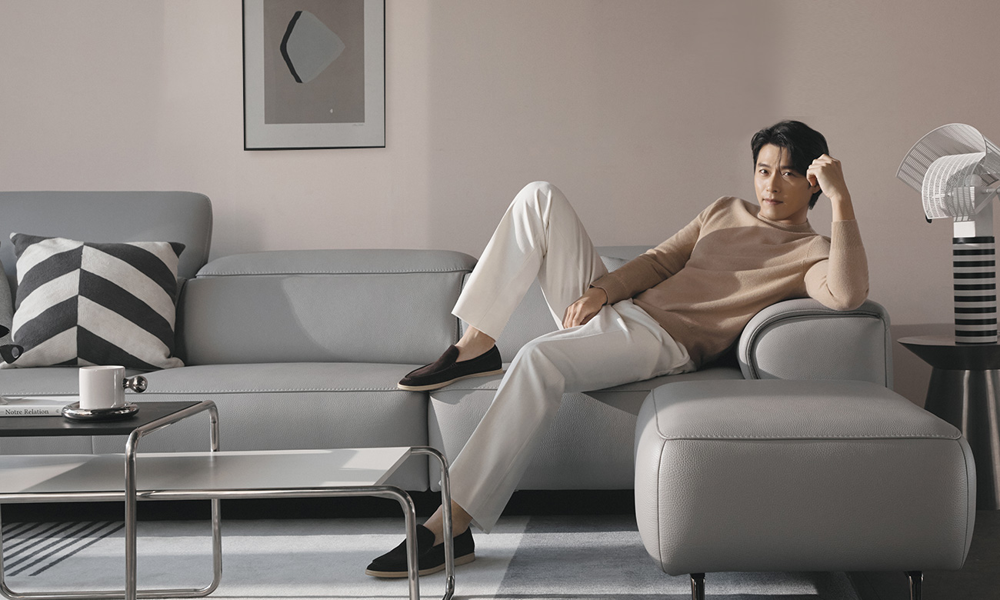
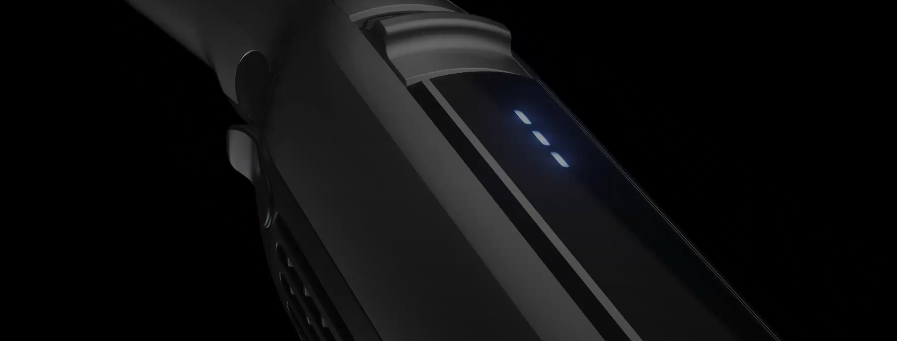
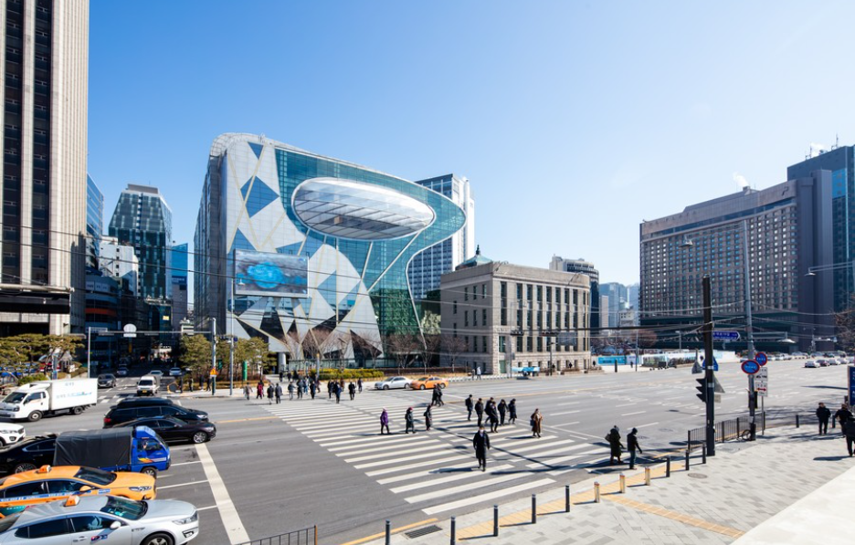
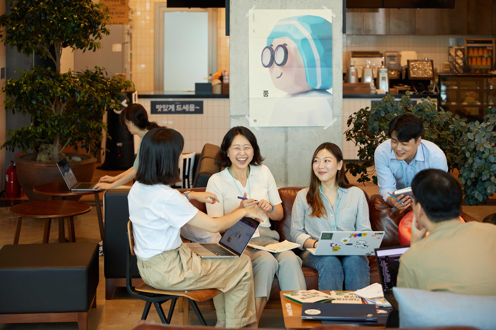

메인비주얼


designer publisher portfolio
Enthusiastic
faithful
Communication
developing
포트폴리오
Web Design Portfolio
Web Publisher Portfolio
-

JAKOMO
반응형 프로젝트로 Swiper와 css keyframe을 사용해 효과를 구현하였습니다.
HTML CSS SWIPERproject -
굿팜
PC 프로젝트로 Swiper와 AOS, 애니메이션을 사용해 효과를 구현하였습니다.
HTML CSS SWIPER AOSproject -
Sulwhasoo
반응형 프로젝트로 Swiper를 사용해 효과를 구현하였습니다.
HTML CSS SWIPERproject -

24901miles
PC 프로젝트로 Swiper를 사용해 효과를 구현하였습니다.
HTML CSS SWIPERproject -

Andar
적응형 모바일 프로젝트로 Swiper를 사용해 효과를 구현하였습니다.
HTML CSS SWIPERproject -

서울시청
적응형 PC 프로젝트로 Swiper를 사용해 효과를 구현하였습니다.
HTML CSS SWIPERproject -

우아한 형제들
반응형 프로젝트로 Swiper와 css keyframe을 사용해 효과를 구현하였습니다.
HTML CSS SWIPERproject
Enthusiastic
마구잡이로 덤비는 것은 도박이나 계획적으로 시도하는 것은 도전이라고 생각합니다. 도전을 바탕으로한 열정적이고 적극적인 추진력은 남들 못지 않다고 생각합니다. 웹퍼블리셔 일에서 행복함과 즐거움을 느끼고 싶습니다.
developing
어려움을 극복하면 하나의 발판이 만들어 진다고 생각합니다. 새로운 분야를 접할때 벽이 느껴지고 이 벽은 높아 보이지만, 그 벽을 넘으면 자신의 실력을 보증하는 요소가 됩니다. 과정에 집중하여 결과를 낼수 있도록 노력하는 자세로 임하겠습니다.
Communication
처음 대면하는 사람들에게 내성적인 사람으로 비춰지기도 합니다. 하지만 시간이 조금만 지나면 누구보다 친숙하고 깊은 관계를 맺습니다. '넌 알면 알수록 더 좋은 사람이야'라는 말은 제가 자주 듣는 말 중의 하나이며 가장 듣기 좋은 말이기도 합니다.
faithful
직장생활을 하면서 결근은 물론이고 지각 한번 한 일이 없습니다. 남들에게 자랑할 만큼 대단한 것은 아니지만 이 점을 자랑스럽게 생각합니다. 기본이 되어있어야 다음 단계의 기술, 정신, 자세를 습득할 수 있기 때문입니다.